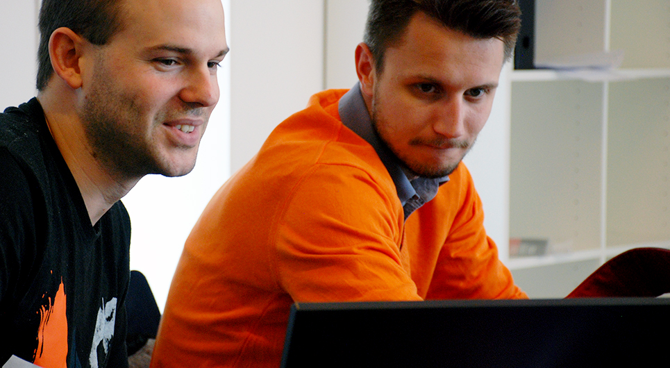

Bliv webudvikler på Roskilde Tekniske skole
På uddannelsen lærer du programmering og udvikling af webløsninger til forskellige platforme.
Uddannelsen giver i teori og praksis en solid viden om arbejdet med front-end og webløsninger. Du vil i praksis anvende webteknologier som kommunikation mellem brugerflade og eksterne datakilder og lære om teknologierne bag dynamiske webløsninger. Du vil eksempelvis arbejde med data fra enheder, som er en del af IoT (Internet of Things), og derigennem bidrage til udviklingen af fremtidens Internet.
Som færdiguddannet webudvikler kan du både arbejde selvstændigt og indgå i et professionelt udviklerteam, samt samarbejde med andre professionelle mediefolk. Du kan finde arbejde både i webbureauer, digitale afdelinger i større virksomheder og i det offentlige.
Du lærer at lave webløsninger med programmering og at integrere tekst, billeder, grafik, video, lyd og animation mm. Uddannelsen giver dig både teknisk og kreativ indsigt, samt fornemmelse for budskab og indhold. Som webudvikler kan du fx hjælpe virksomheder med et digitalt visuelt udtryk udadtil, når du skaber iøjnefaldende hjemmesider og internetløsninger. Du kan kan arbejde som ansat i private og offentlige virksomheder, på reklame- og webbureauer. Du har også mulighed for at starte eget firma.